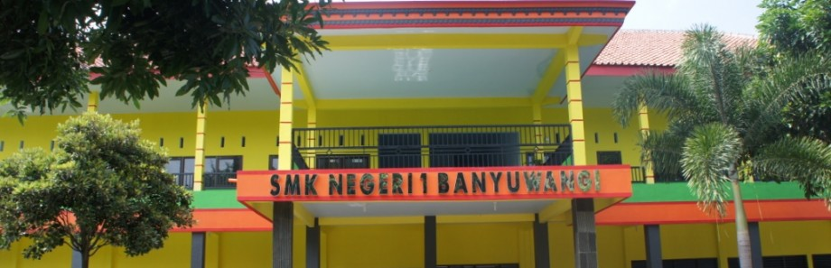

SMK Negeri 1 Banyuwangi adalah Sekolah Menengah Kejuruan yang terletak di Kelurahan Mojopanggung, Giri, Banyuwangi.
Statusnya dinegerikan pada tahun 1968, setelah sebelumnya menjadi kelas jauh SMEA Negeri Jember.
Sekolah ini populer dengan singkatan "Esemkasa".
Jurusan-jurusan yang ada di SMK Negeri 1 Banyuwangi adalah:
- Manajemen Bisnis, meliputi kompetensi keahlian Aplikasi Perkantoran (APk), Akuntansi (Ak) dan Pemasaran (Pm)
- Teknologi Informatika, meliputi kompetensi keahlian Teknik Komputer dan Jaringan (TKJ),
Rekayasa Perangkat Lunak (RPL) dan Multimedia (MM)
- Pariwisata, meliputi kompetensi keahlian Akomodasi dan Perhotelan (APh)
- Seni,meliputi kompetensi keahlian Seni Tari dan DKV (Desain Komunikasi Visual)
Ekstrakurikuler yang ada di SMK Negeri 1 Banyuwangi antara lain :
- Organisasi Siswa Intra Sekolah (OSIS)
- Dewan Ambalan (DA)
- Remaja Masjid (Remas)
- Pecinta Alam (PA)
- Laskar Hijau (LH)
- Usaha Kesehatan Sekolah / Palang Merah Remaja (UKS/PMR)
- Futsal
- Basket
- Voli
- Tari
- Teater Kusuma
- Esemkasa Breakin Crew